الطابور يطول
امسح، حصّل، انتهى. البيع البسيط يتم بلوحة المفاتيح في ثلاث خطوات، والمبلغ يبقى ظاهرًا، ويقرأ القارئ أو كاميرا الهاتف الرمز الشريطي.
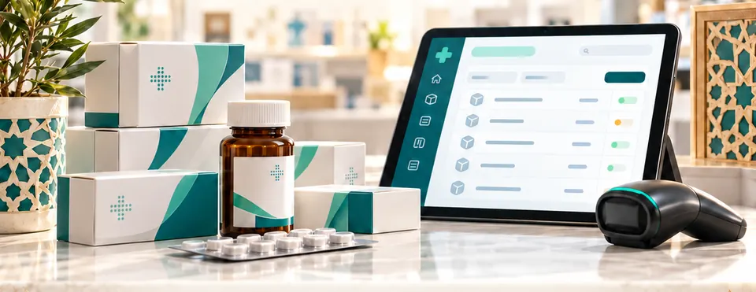
برنامج تسيير الصيدلية · المغرب
يسيّر دوايتي الصندوق، والمخزون حسب الدفعة وتاريخ انتهاء الصلاحية، والطلبيات لدى الموزعين، والسجلات التنظيمية. صُمّم للصيدلية المغربية، بالعربية والفرنسية.
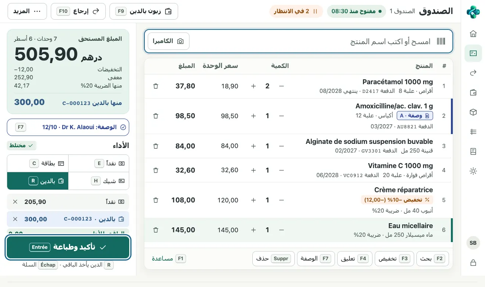
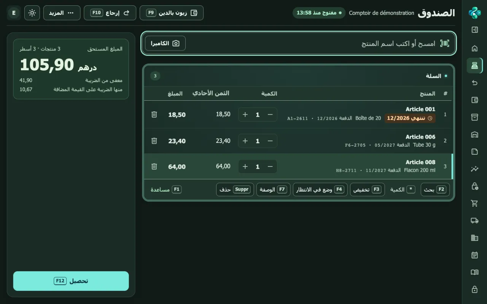
في الكونتوار
زبناء ينتظرون، جهاز مشترك، انقطاعات متكررة: دوايتي مصمَّم لهذا الإيقاع.
امسح، حصّل، انتهى. البيع البسيط يتم بلوحة المفاتيح في ثلاث خطوات، والمبلغ يبقى ظاهرًا، ويقرأ القارئ أو كاميرا الهاتف الرمز الشريطي.
كل علبة مرتبطة بدفعة لها تاريخ. البيع يُخرج أولًا الدفعة الأقرب انتهاءً، والصفحة الرئيسية تنبّه إلى الدفعات التي تنتهي خلال 3 أشهر.
اقتراح طلبية كل يوم حسب الحد الأدنى والأقصى، وصل طلب لكل موزّع، وتذكير عندما لا تُسلَّم طلبية بعد 7 أيام.
سجل الوصفات وسجل المخدّرات يُملآن لحظة البيع، بترقيم متسلسل دون فراغ، وقابلان للطباعة بصيغة PDF.
عدّ حسب الأوراق والقطع النقدية، فارق محسوب تلقائيًا، مصاريف وسحوبات مسجّلة، إغلاق مرقّم وتقرير يومي حسب نسبة الضريبة.
حساب لكل زبون بسقف محدد، بيع بالدين، تسديدات، كشوف قابلة للطباعة، لائحة المتأخرين وتذكيرات مسجّلة.
الوظائف
ما هو موصوف هنا يعمل الآن في دوايتي. وما سيأتي لاحقًا تجده في «قريبًا».
القراءة التلقائية للوصولات المطبوعة بالفرنسية، تُفعَّل عند بدء الخدمة. وإلا: استيراد Excel أو CSV، أو إدخال يدوي.
بيع بسيط في ثلاث خطوات
مفاتيح أخرى: F2 بحث، F7 وصفة، F9 زبون بالدين، F10 إرجاع.
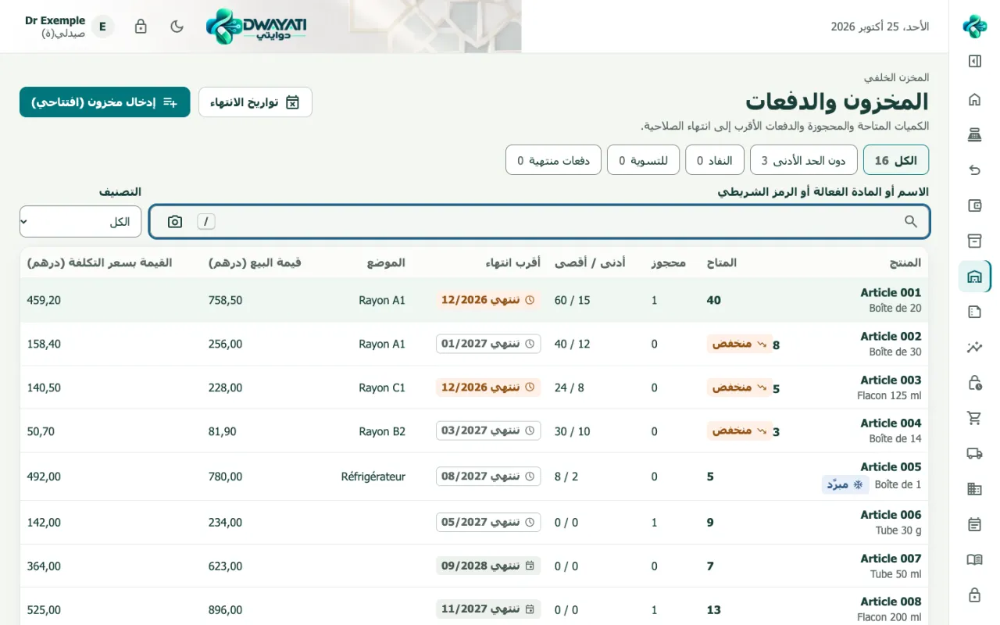
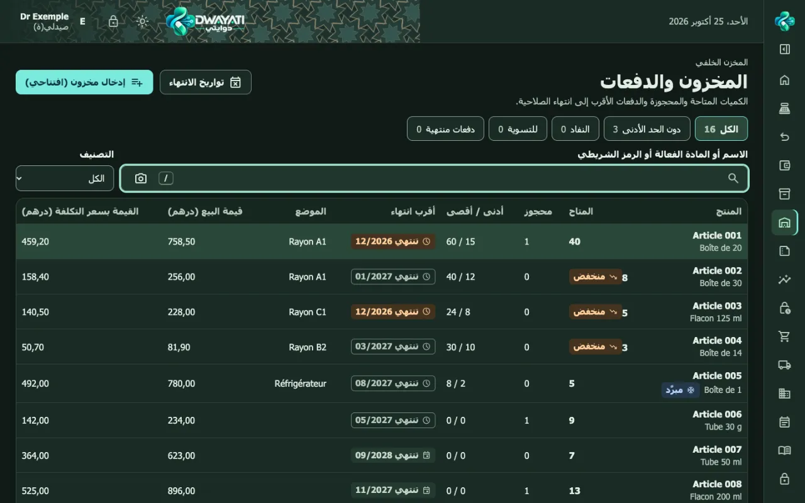
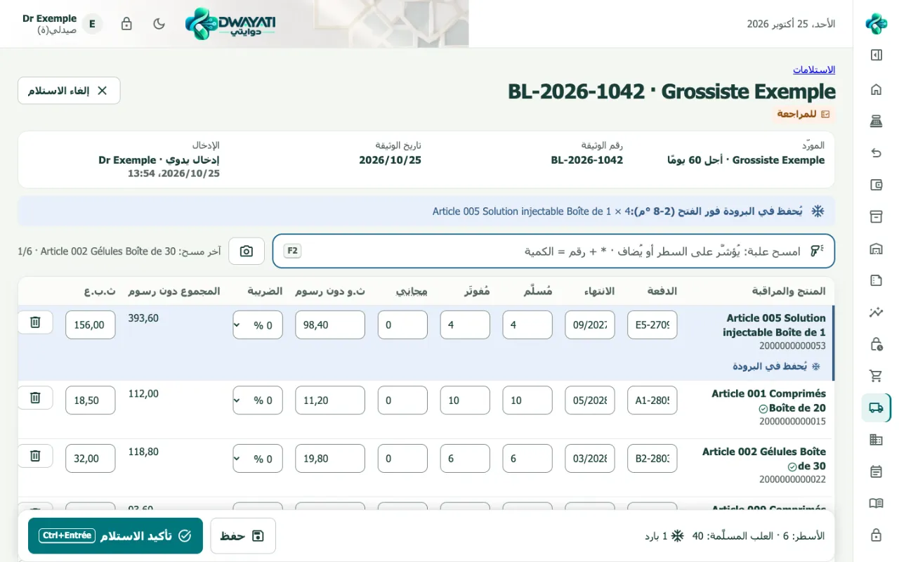
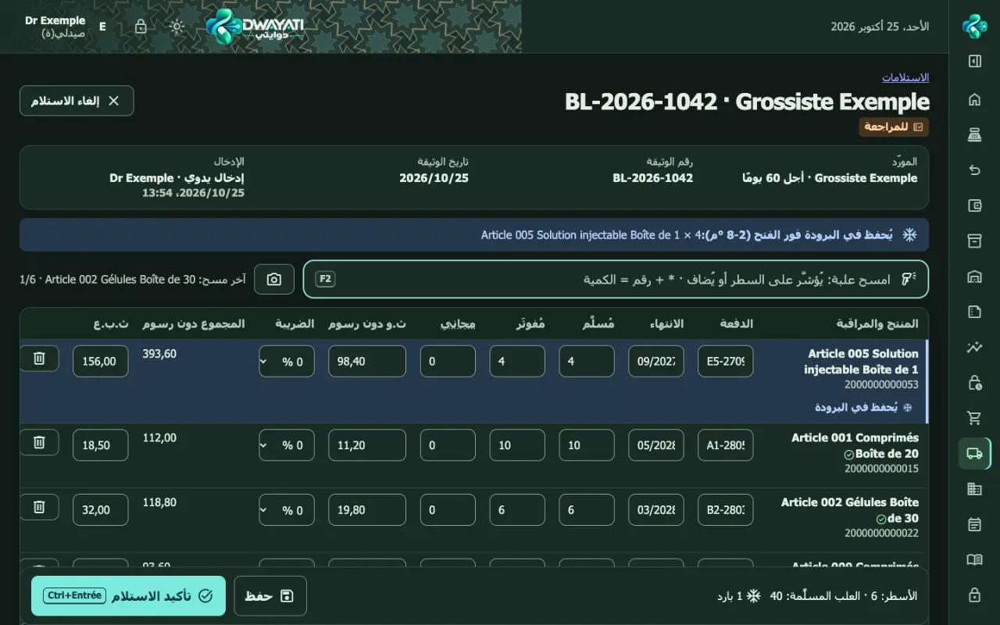
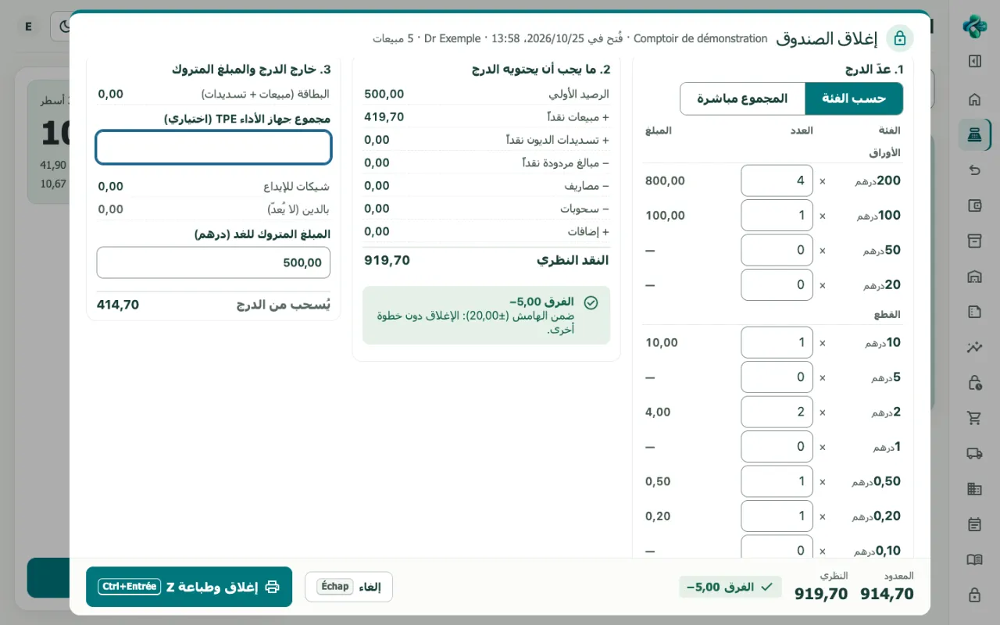
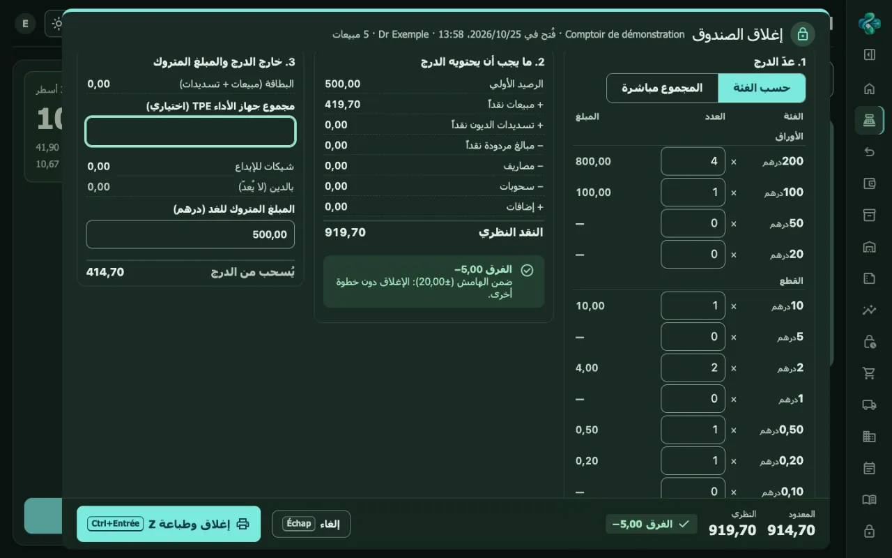
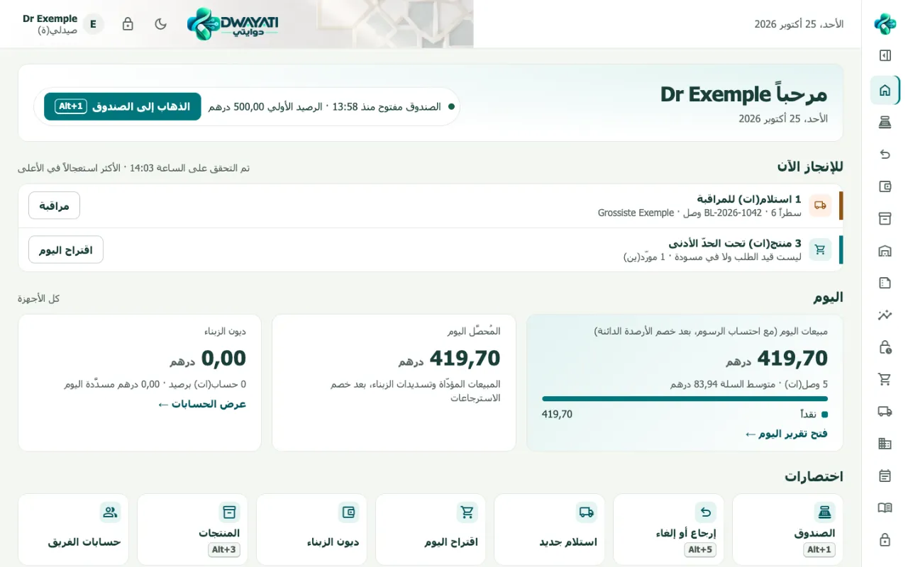
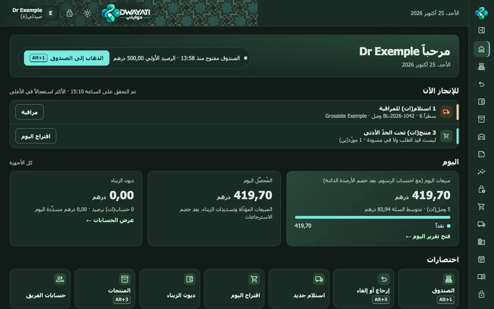
سجل المخدّرات · مثال وهمي
أدوار الصيدلي والمساعد ومسؤول النظام. تغيير المستخدم برمز شخصي، قفل الجهاز، أجهزة الكونتوار مسجّلة. التكاليف والهوامش لا تظهر أبدًا للمساعد.
الدخول بـ Face ID أو البصمة أو Windows Hello بفضل مفاتيح المرور (passkeys)، إلى جانب كلمة السر والرمز.
الواجهة كاملة باللغتين، والعربية من اليمين إلى اليسار. كل جهاز يحتفظ بلغته.
حاسوب الكونتوار أو اللوحة أو الهاتف، عبر المتصفح. وضع فاتح أو داكن.
قارئ رموز USB، طابعة وصولات 80 مم، ودرج نقود موصول بالطابعة. دون برنامج تشغيل خاص.
حسابات الزبناء، السقف، البيع والتسديد، كشوف A4 أو 80 مم، المتأخرون والتذكيرات. يُطلب رمز الصيدلي عند تجاوز السقف.
الأمان
السجلات والوصفات والديون تحتوي على معطيات صحية. هذا ما يفعله دوايتي فعليًا لحمايتها.
هويات المرضى في سجل المخدّرات مشفّرة (AES-256) بمفتاح محفوظ خارج قاعدة البيانات. نسخة مسروقة من القاعدة لا تكشفها. الصيدلي وحده يطّلع عليها، وكل اطلاع مسجَّل.
الدخول، الإلغاءات، تغيير الأثمان، فوارق الصندوق، الاطلاع على معطيات المرضى: كل شيء يُكتب في سجل كل سطر فيه مرتبط بما قبله. أي حذف أو تعديل يُكتشف.
تُنجز نسخة احتياطية مشفّرة كل ليلة. ونسخة خارج الخادم مبرمجة.
لكل صيدلية قاعدة بياناتها الخاصة. لا تختلط معطياتها أبدًا بمعطيات صيدلية أخرى.
يتحقق هاتفكم أو حاسوبكم من الوجه أو البصمة. لا يتلقى دوايتي أي صورة أو بصمة، بل مفتاحًا رقميًا فقط. على جهاز مشترك، يُستعمل الهاتف الشخصي أو مفتاح أمان.
العمليات الحساسة (مخدّر، تخفيض كبير، فارق في الصندوق) تتطلب رمز الصيدلي. المساعد لا يرى التكاليف ولا الهوامش.
يساعد دوايتي على حماية المعطيات، لكنه لا يعوّض إجراءاتكم: طلب الإذن لدى اللجنة الوطنية لمراقبة حماية المعطيات ذات الطابع الشخصي (CNDP) تقوم به الصيدلية، ونحن نوفّر المعلومات التقنية اللازمة.
العروض
التطبيق الكامل باشتراك شهري. مرحلة تجريبية: الولوج بدعوة فقط.
250 درهم شهريًا، دون احتساب الضريبة
قريبًا
قيد الإعداد: غير متوفر بعد.
قريبًا
حسب الطلب
قيد الإعداد: غير متوفر بعد.
مبرمج، غير متوفر بعد: حاسوب خادم صغير يُثبَّت في الصيدلية، لمواصلة العمل أثناء انقطاع الإنترنت.
قريبًا
مرة واحدة عند البداية: التثبيت، استيراد منتجاتكم، إنشاء حسابات الفريق، والتكوين.
من 3 000 إلى 5 000 درهم دون احتساب الضريبة
الأثمان دون احتساب الضريبة على القيمة المضافة، وتُضاف إليها الضريبة. مرحلة تجريبية: الولوج بدعوة فقط.
قريبًا
غير متوفر اليوم. نعلن عنه لتعرفوا إلى أين يتجه دوايتي.
قريبًا
التكفل في إطار التأمين الإجباري عن المرض (CNSS وCNOPS) والتعاضديات، مع تتبّع التعويضات. مبرمج في إصدار قادم.
قريبًا
مواصلة المبيعات البسيطة أثناء انقطاع الإنترنت، ثم إرسال كل شيء عند عودة الشبكة.
قريبًا
قراءة الوصفات، اقتراحات الطلبيات، وتنبيهات ذكية.
أسئلة
على خادم يديره ناشر دوايتي، في قاعدة بيانات منفصلة لكل صيدلية. هويات المرضى في سجل المخدّرات مشفّرة، وتُنجز نسخة احتياطية مشفّرة كل يوم. الاستضافة النهائية قيد الاختيار. الإجراء لدى اللجنة الوطنية لمراقبة حماية المعطيات ذات الطابع الشخصي (CNDP) تقوم به الصيدلية، ونحن نوفّر المعلومات التقنية اللازمة.
دوايتي يحتاج إلى الإنترنت. ننصح باتصال ثانٍ احتياطي (موجّه 4G يتولى الأمر تلقائيًا): هكذا تمرّ أغلب الانقطاعات دون أن تُلاحَظ. صندوق احتياطي دون إنترنت وتثبيت داخل الصيدلية مبرمجان، وغير متوفرين بعد (انظر «قريبًا»).
هو جزء من التشغيل الأوّلي: نكوّن الفريق على عمله الحقيقي (البيع، الاستلام، الإغلاق). شاشة الصندوق تُستعمل بلوحة المفاتيح، وكل اختصار مكتوب بجانب الزر.
نستورد لائحة منتجاتكم من ملف (Excel أو CSV) مُصدَّر من برنامجكم القديم. ويُدخل مخزون البداية حسب الدفعة وتاريخ الانتهاء. لا يُنقل سجل مبيعات البرنامج القديم: يبقى متاحًا للاطلاع فيه.
حاسوب بمتصفح حديث لكل جهاز، قارئ رموز USB، طابعة وصولات 80 مم، وإن رغبتم درج نقود موصول بالطابعة. ويمكن للهاتف أن يقرأ الرموز الشريطية بكاميرته.
ليس بعد. يطبع دوايتي حاليًا ملخصًا يساعد المريض على ملء ورقة العلاج. التكفل في إطار AMO (CNSS وCNOPS) والتعاضديات مبرمج في إصدار قادم.
عرض توضيحي
30 دقيقة، في صيدليتكم أو عن بُعد، بمعطيات وهمية. اتركوا معلوماتكم وسنتصل بكم.
هذه الاستمارة لا تحفظ أي شيء على هذا الموقع: تحضّر رسالة بريد إلكتروني أو واتساب ترسلونها بأنفسكم. لا تكتبوا فيها أي معلومة عن مرضاكم.